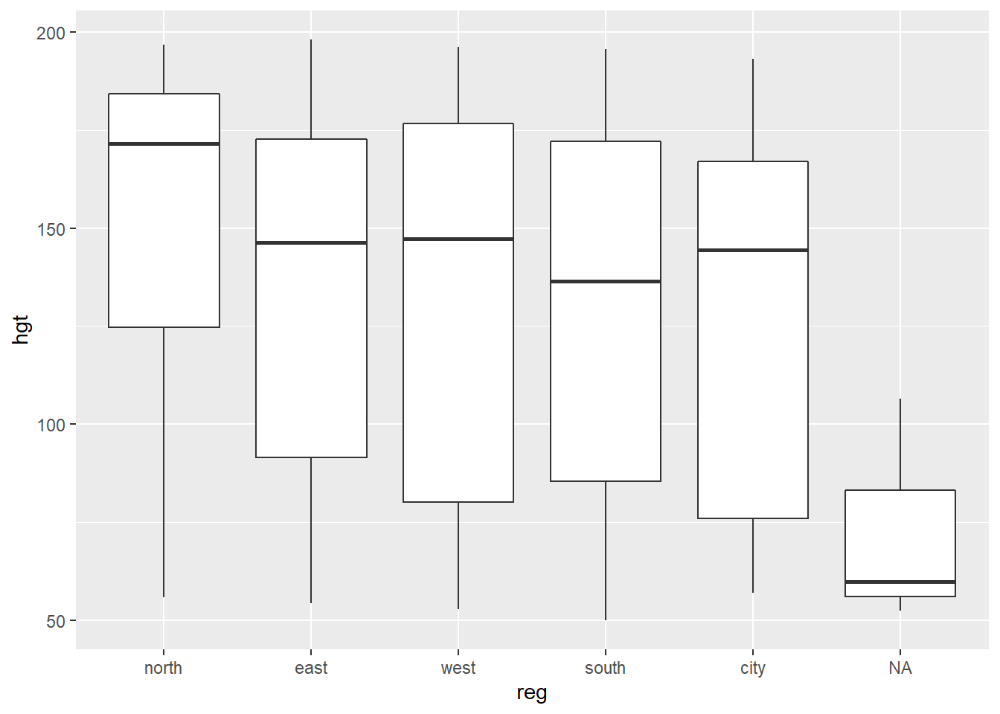
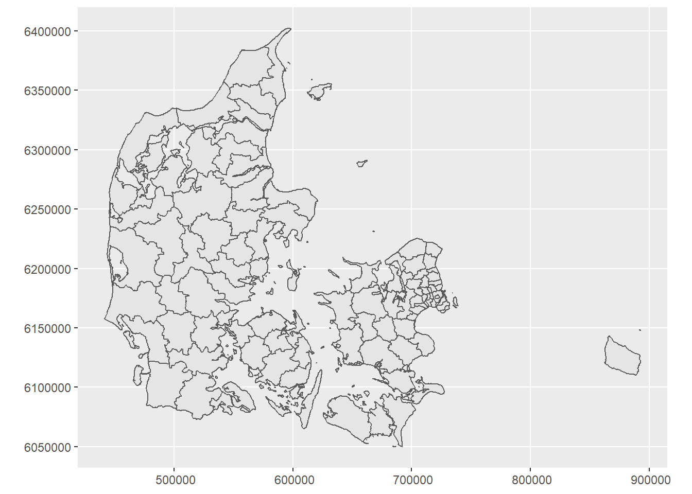
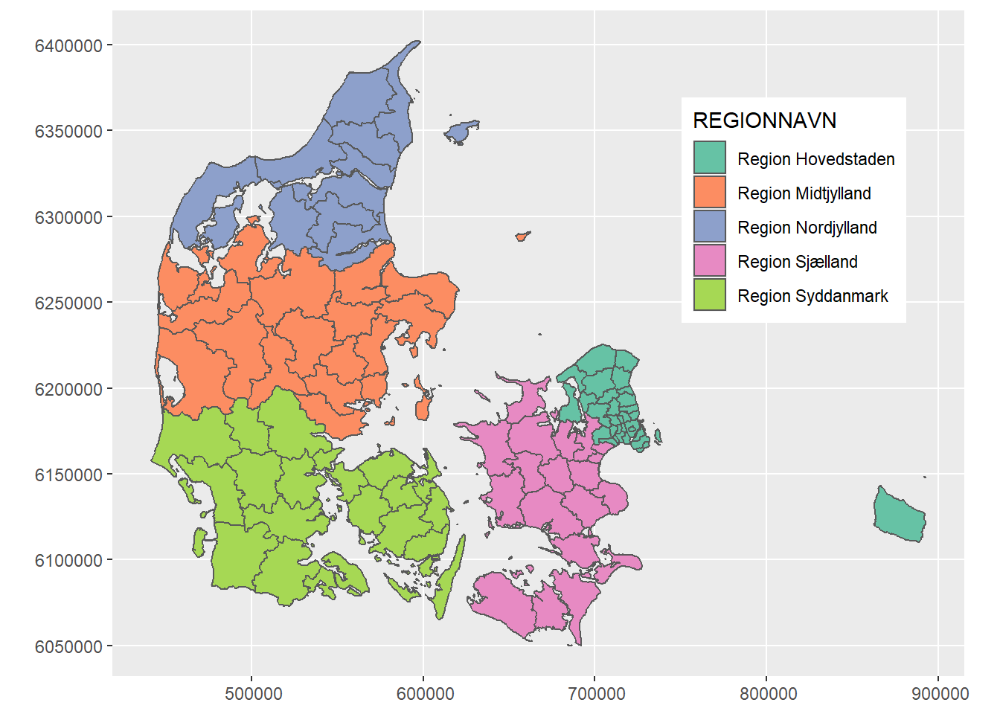
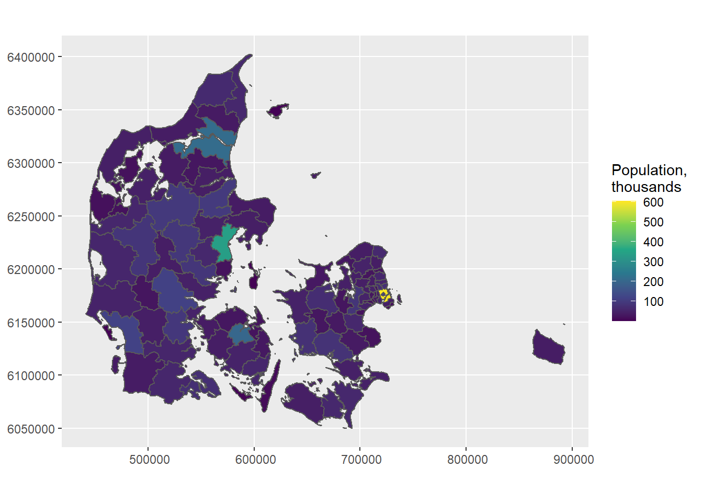

Practical E - solutions with
ggplot2
Statistical Programming in R
Exercises
The following packages are required for this practical:
library(dplyr)
library(magrittr)
library(mice)
library(ggplot2)
library(stringr)and if you’d like the same results as I have obtained, you can fix the random seed
set.seed(123)- Create a scatterplot between
ageandbmiin themice::boysdata set.
p <- ggplot( data = boys, aes(age, bmi))
p + geom_point()## Warning: Removed 21 rows containing missing values (geom_point).
Package ggplot2 offers far greater flexibility in data
visualization than the standard plotting devices in R.
However, it has its own language, which allows you to easily expand
graphs with additional commands. To make these expansions or layers
clearly visible, it is advisable to use the plotting language
conventions. For example,
ggplot( data = mice::boys, aes(age, bmi)) +
geom_point()would yield the same plot as
ggplot(mice::boys, aes(age, bmi)) + geom_point()but the latter style may be less informative, especially if more customization takes place and if you share your code with others.
- Now recreate the plot with the following specifications:
- If
bmi < 18.5usecolor = "light blue" - If
bmi > 18.5 & bmi < 25usecolor = "light green" - If
bmi > 25 & bmi < 30usecolor = "orange" - If
bmi > 30usecolor = "red"
Hint: it may help to expand the data set with a new variable.
It may be easier to create a new variable that creates the specified
categories. We can use the cut() function to do this
quickly
boys2 <-
boys %>%
mutate(class = cut(bmi, c(0, 18.5, 25, 30, Inf),
labels = c("underweight",
"healthy",
"overweight",
"obese")))by specifying the boundaries of the intervals. In this case we obtain
4 intervals: 0-18.5, 18.5-25,
25-30 and 30-Inf. We can now call
ggplot
ggplot(data = boys2) +
geom_point(aes(age, bmi, col = class))## Warning: Removed 21 rows containing missing values (geom_point).
Although the different classifications have different colours, the colours are not conform the specifications of this exercise. We can manually override this:
ggplot(data = boys2 ) +
geom_point(aes(age, bmi, col = class)) +
scale_color_manual(values = c("light blue", "light green", "orange", "red"))## Warning: Removed 21 rows containing missing values (geom_point).
Because there are missing values, ggplot2 displays a
warning message. If we would like to not consider the missing values
when plotting, we can simply exclude the NAs by using a
filter():
ggplot( data = boys2[ !is.na( boys2$class ), ] ) +
geom_point(aes(age, bmi, col = class)) +
scale_color_manual(values = c("light blue", "light green", "orange", "red"))
Specifying a filter on the feature class is sufficient:
age has no missings and the missings in class directly
correspond to missing values on bmi. Filtering on
bmi would therefore yield an identical plot.
- Create a histogram for
agein theboysdata set.
ggplot( data = boys ) +
geom_histogram(aes(age), binwidth = .4)
Please note that the plots from geom_histogram() and
hist use different calculations for the bars (bins) and
hence may look slightly different.
- Create a bar chart for
regin the boys data set.
ggplot( data = boys ) +
geom_bar(aes(reg))
Note that geom_bar by default plots the
NA’s, while barplot() omits the
NA’s without warning. If we would not like to plot the
NAs, then a simple filter() (see exercise 2)
on the boys data is efficient.
- Create a box plot for
hgtwith different boxes forregin theboysdata set.
ggplot( data = boys, aes(reg, hgt)) +
geom_boxplot()## Warning: Removed 20 rows containing non-finite values (stat_boxplot).
- Create a density plot for
agewith different curves for boys from thecityand boys from rural areas (!city).
With ggplot2:
boys %>%
mutate(area = ifelse(reg == "city", "city", "rural")) %>%
filter(!is.na(area)) %>%
ggplot(aes(age, fill = area)) +
geom_density(alpha = .3) # some transparency
- Create a diverging bar chart for
hgtin theboysdata set, that displays for everyageyear that year’s mean height in deviations from the overall averagehgt.
Let’s not make things too complicated and just focus on
ggplot2:
boys %>%
mutate(Hgt = hgt - mean(hgt, na.rm = TRUE),
Age = cut(age, 0:22, labels = 0:21)) %>%
group_by(Age) %>%
summarize(Hgt = mean(Hgt, na.rm = TRUE)) %>%
mutate(Diff = cut(Hgt, c(-Inf, 0, Inf),
labels = c("Below Average", "Above Average"))) %>%
ggplot(aes(x = Age, y = Hgt, fill = Diff)) +
geom_bar(stat = "identity") +
coord_flip()
We can clearly see that the average height in the group is reached just before age 7.
The group_by() and summarize() function are
advanced dplyr functions used to return the
mean() of deviation Hgt for every group in
Age. For example, if we would like the mean and sd of
height hgt for every region reg in the
boys data, we could call:
boys %>%
group_by(reg) %>%
summarize(mean_hgt = mean(hgt, na.rm = TRUE),
sd_hgt = sd(hgt, na.rm = TRUE))## # A tibble: 6 × 3
## reg mean_hgt sd_hgt
## <fct> <dbl> <dbl>
## 1 north 152. 43.8
## 2 east 134. 43.2
## 3 west 130. 48.0
## 4 south 128. 46.3
## 5 city 126. 46.9
## 6 <NA> 73.0 29.3The na.rm argument ensures that the mean and sd of only
the observed values in each category are used.
- Read in the
sfpackage, and open the shapefiles on the Danish municipalities from the course homepage. Plot theREGIONNAVNvariable to see the Danish regions. Plot the municipal-level population.
library(sf)## Linking to GEOS 3.9.1, GDAL 3.4.3, PROJ 7.2.1; sf_use_s2() is TRUEdenmark <- st_read("DK_map.shp")## Reading layer `DK_map' from data source
## `C:\Mikkel\Dropbox\Work\RWORK\DSTStuff\Ghana\RGhana\Contents\Material\Part E - Data visualization\DK_map.shp'
## using driver `ESRI Shapefile'
## Simple feature collection with 306 features and 6 fields
## Geometry type: POLYGON
## Dimension: XY
## Bounding box: xmin: 441524.8 ymin: 6049785 xmax: 892800.8 ymax: 6402308
## CRS: NAclass(denmark)## [1] "sf" "data.frame"ggplot( data = denmark ) + geom_sf()
Say we want to colour the maps by the administrative regions coded in
the REGIONNAVN variable. Also, we could move the legend
inside the plot and use a more colorblind-friendly color scale:
denmark %>% ggplot( aes( fill = REGIONNAVN ) ) + geom_sf() +
theme(legend.position = c(0.8,0.7)) +
scale_fill_brewer(palette = "Set2")
We plot the municipal-level population
denmark %>% mutate( population = population/1000) %>%
ggplot(aes( fill = population)) +
geom_sf() +
scale_fill_viridis_c() + # The viridis color scale gives more visual nuance
labs( fill = "Population,\nthousands")
But perhaps population per square kilometer might be more informative than just population
denmark$area <- st_area(denmark)/(1000^2)
denmark %>%
group_by(KOMKODE) %>%
summarise( total.area = sum( as.numeric( area ) ),
population = first( population )) %>%
mutate( pop.area = population/total.area) %>%
ggplot( aes( fill = pop.area)) +
geom_sf()+
scale_fill_viridis_c() + # The viridis color scale gives more visual nuance
labs( fill = "Population per \nsquare kilometer")
Our sf object contains more than one feature for some of
the municipalities. The population number given is for the total
municipality, so we need to compute the total area for each
municipality.
End of Practical